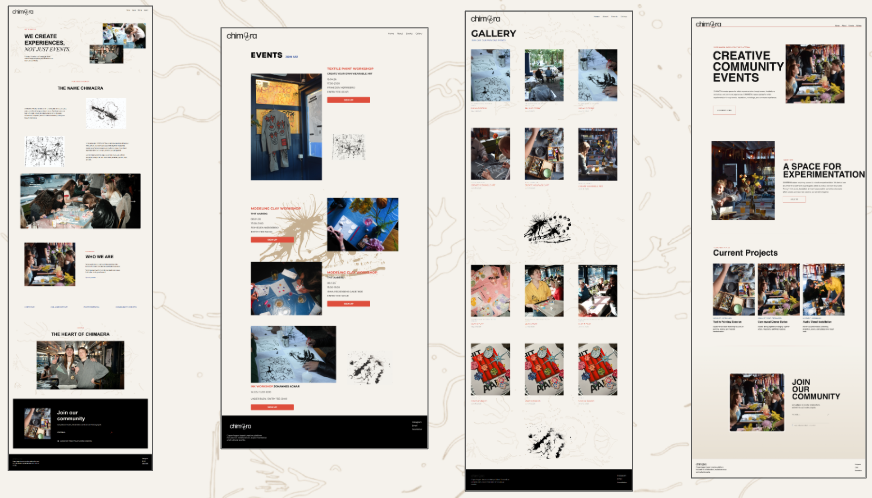

TEMA 5
INDHOLD
LØSNING
I dette tema arbejdede jeg i gruppe med redesign af Chimaeras website. Formålet var at skabe en moderne og brugervenlig løsning, som afspejlede virksomhedens kreative identitet og fællesskabsorienterede værdier. Resultatet blev et responsivt website med fokus på visuel kommunikation, navigation og brugeroplevelse. Projektet samlede mange af de kompetencer, jeg havde opbygget gennem semesteret, i én samlet løsning.

PROCES
Projektet omfattede research, idéudvikling, wireframes, styletiles og prototyper, som dannede grundlaget for det endelige design. Jeg arbejdede særligt med udviklingen af About-siden, hvor jeg stod for både layout og kodning. Derudover indgik fotografering, indholdsproduktion og samarbejde gennem GitHub som en vigtig del af processen. Løsningen blev løbende forbedret gennem test og feedback fra både undervisere og gruppemedlemmer.

LÆRING
Temaet gav mig værdifuld erfaring med at arbejde i et større projektteam og udvikle en løsning i samarbejde med andre. Jeg lærte at kombinere design, indhold og kodning i en samlet proces og fik større forståelse for arbejdsfordeling, versionsstyring og iterative designforløb. Projektet har været med til at styrke både mine tekniske og samarbejdsmæssige kompetencer og afsluttede semesteret med et projekt, der samlede mange af de værktøjer og metoder, jeg havde lært undervejs.